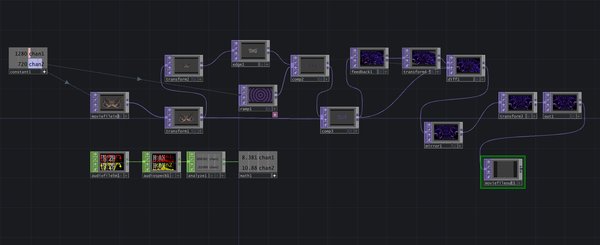
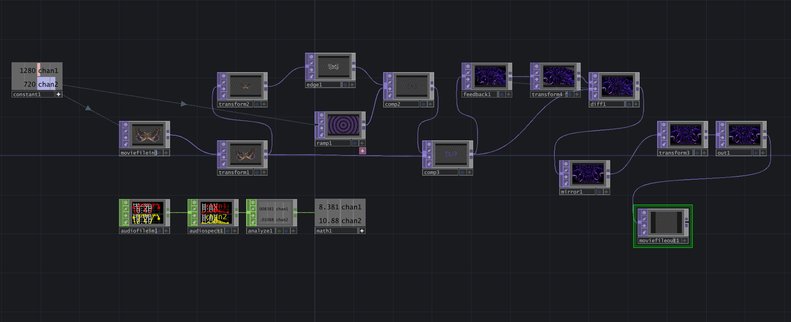

Digital materiality
This series of works explores the diverse possibilities of utilizing TouchDesigner to generate a range of textures and interactive effects, comprising 20 different experiments.
Individual Project Introductions
No.1
This experiment utilizes Composite to overlay different Ramps, synthesizing colors and presenting a variety of texture effects, and ultimately achieves dynamic visuals through the application of Mirror and Tile techniques.


No.2
This marks the first exploration of 3D effects, where dynamic motion was introduced through the addition of Noise, and a Line material was applied to create a wireframe-like appearance.

3. Paint the terrain with different textures
A 3D point cloud was generated using Sphere and Noise. After rendering, effects such as RGB Delay, Bloom, and Pixel Relocator were applied to create vibrant textures. These three effects can be switched between during playback.

No.4
This experiment utilizes a simple circle as the base. Through the combination of effects like Edge and Transform, it evolves into complex forms, also with a Ramp applied for coloring.
No.5
This marks the first attempt at using VideoDeviceIn. By combining Noise and Edge effects, the camera input produces unstable contour lines, while KeyboardIn is used to switch the input to a circular Edge effect.

No.6
This project marks the beginning of combining multiple effects. Two bananas, differing in size and rotation direction, were used to create dynamic boundary lines, colored with a Ramp, and finally merged with a vibrant background through Mirror, Tile, resulting in a kaleidoscopic pattern unrecognizable from the original bananas.

No.7
This project combines two sets of Circles and Ramps to construct composite shapes, while an lfo is used to introduce varying dynamic movements.

No.8
This project explores a comprehensive application of Video Device In by extracting the edges of the camera input, overlaying a movie clip as the background, and using Keyboard In to control the color of the edges.

No.9
The following series is a set of texture synthesis experiments using a feedback loop. In this piece, two butterfly images serve as the base textures, with one butterfly's vibration controlled by an audio track. A feedback loop is then used to create rotational patterns through rotation and addition. Finally, Mirror and Tile effects are applied to form a complex composition.


No.10
This project follows a structure similar to the previous one, while testing the possibilities of combining different Ramps, Mirrors, and Tiles.


No.11
This piece also uses a butterfly as the base pattern, with its transformations controlled by audio input. Within the feedback loop, rotation and difference operations are applied to create variations, further enhanced by Mirror and other effects.
 
